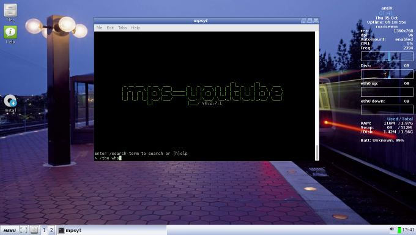
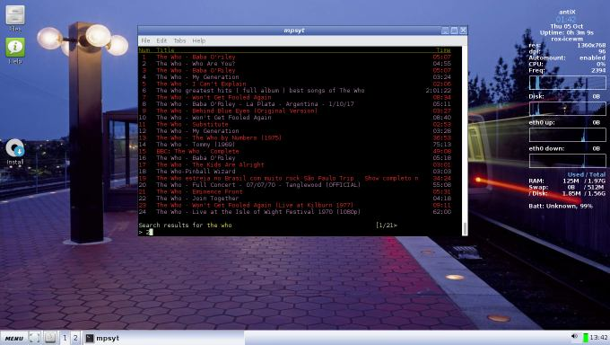
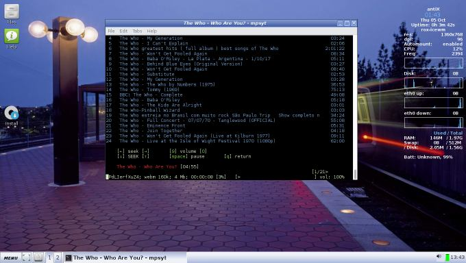
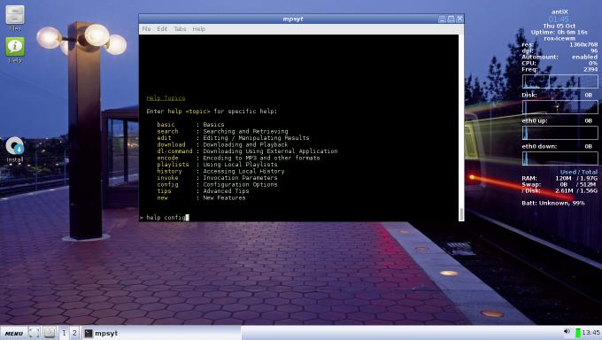
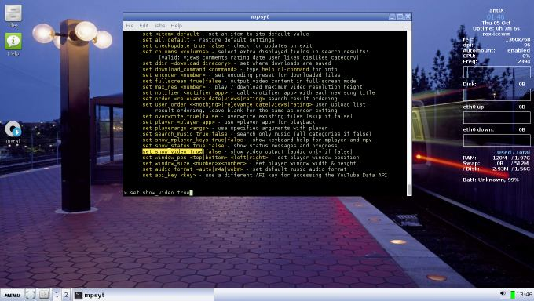
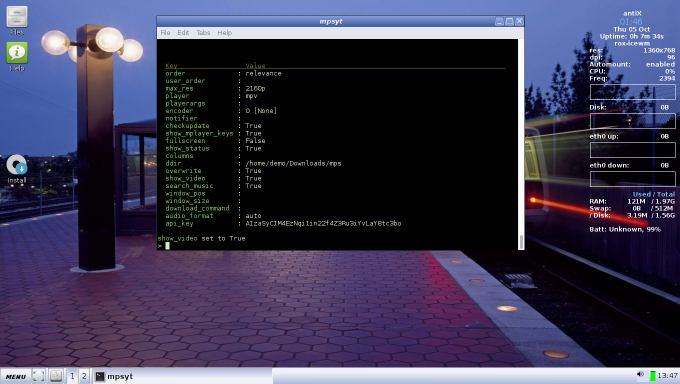
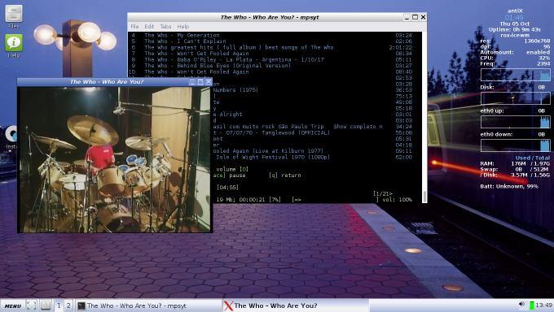

On this page:
What is mps-youtube?
[top]
This project is based on mps, a terminal based program to search, stream and download music.
This implementation uses YouTube as a source of content and can play and download video as well as audio.
Features
[top]
-
Search and play audio/video from YouTube
-
Search tracks of albums by album title
-
Search and import YouTube playlists
-
Create and save local playlists
-
Download audio/video
-
Convert to mp3 & other formats (requires ffmpeg or avconv)
-
View video comments
-
Requires mplayer or mpv
How do you use it?
[top]
* Audio (default)-
Type mpsyt in a terminal
-
Type /name of the artist eg /the who

-
Type the number of the song

-
Audio should play

-
Video
-
Type help config

-
Type or highlight set show_video true

-
Type name of artist/song as before

-
Video should now play

Links
[top]